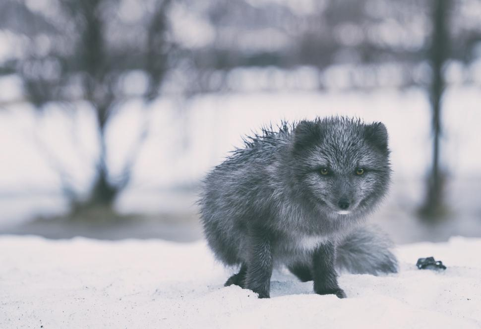
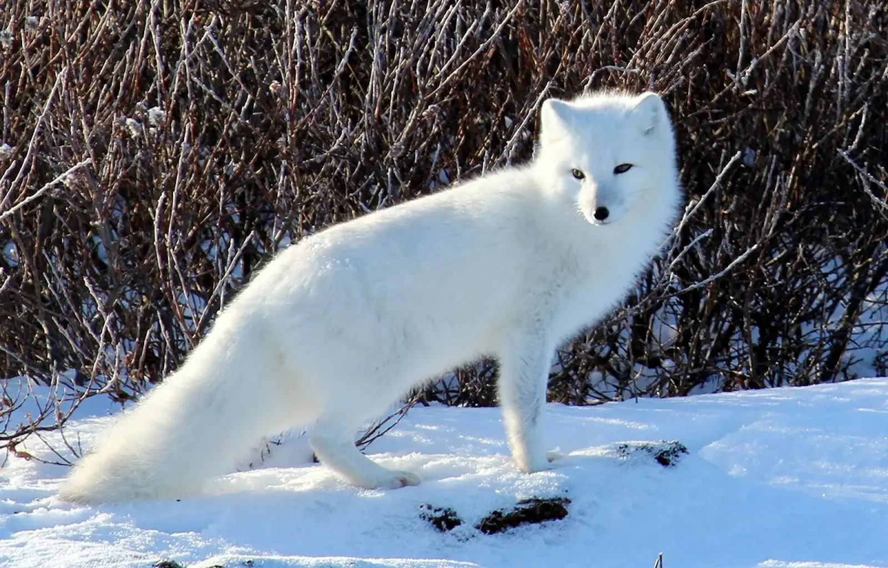

The Arctic Fox lives in many areas around the arctic circle, including:
Arctic foxes are omnivores, which means they eat plants and meat. They eat lemmings and moles, along with occasional carrion from polar bear kills. They also eat berries, eggs, fish, insects, and birds.
Most arctic foxes are white, which developed to provide camoflauge from predators against the snow. When it becomes summer, they shed their white coat to reveal a brown and gray coat that better camoflauges with the rocky terrain under the snow. Very rarely though, they can be dark blue, black, or brown year round.


Photo by unknown from Freerange Stock
Photo by unknown from unknown